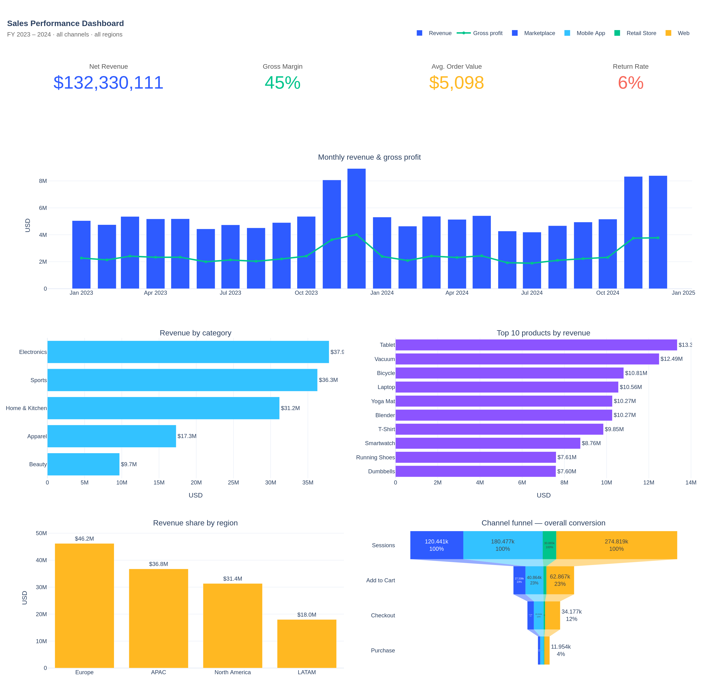

Project 1 · Sales
Sales Performance Analytics
Two years of multi-channel e-commerce orders. Builds the executive sales view: revenue trends, category & product performance, regional breakdown, top-customer concentration, and a session→purchase funnel by channel.
$132MNet revenue
26kOrders
80kOrder lines
45%Gross margin